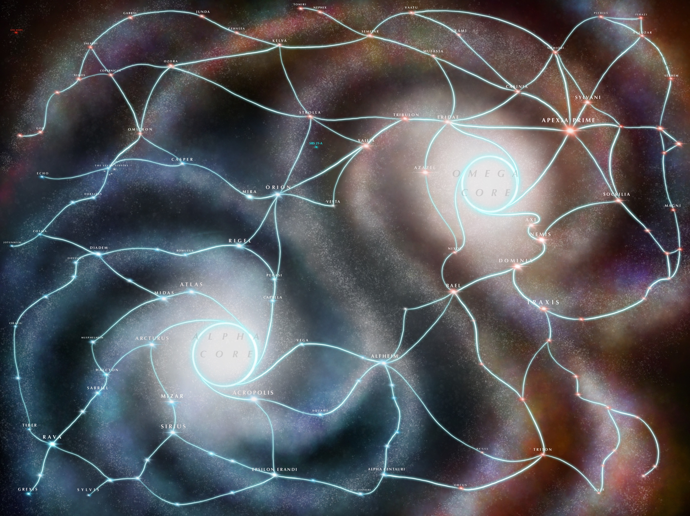

꧁༺ 𝑵𝑬𝑶𝑵 𝑲𝑵𝑰𝑮𝑯𝑻𝑺 ༻꧂
𝔞𝔫𝔡 𝔟𝔢𝔣𝔬𝔯𝔢 𝔱𝔥𝔢𝔯𝔢 𝔴𝔞𝔰 𝔫𝔬𝔱𝔥𝔦𝔫𝔤...
𝔱𝔥𝔢𝔯𝔢 𝔴𝔢𝔯𝔢 𝔪𝔬𝔫𝔰𝔱𝔢𝔯𝔰.
🪐𝐈𝐍𝐓𝐑𝐎𝐃𝐔𝐂𝐓𝐈𝐎𝐍🪐
On the edge of the far-future Milkdromeda galaxy, where science blurs with sorcery, the Solarian Imperium rules beneath a golden banner. Some thrive, some starve, all are watched by the ever-burning eye.
From the shadows rises Amélie: code-splicer, reality-breaker, orphan and outlier. Once discarded, she rose from the gutters to one day become whispered into legend, shaped by loss, ambition, and self sacrifice.
Her fate twists when she unlocks the heart of a robot named Ace. There, she beholds the Divine Code, a living singularity of logic and myth, the nexus of science and magic. Her joke: “How do I reverse entropy?” is answered... with coordinates, a tarot deck that bends reality, and secrets the empire tried to kill.
With newfound allies Connor and Vel, Amélie flees with Ace, but every answer bleeds into more riddles. What is the Divine Code? Who else saw it? And what now blooms inside of her brain?
🕊️ 𝐂𝐇𝐎𝐈𝐂𝐄𝐒 🐍
Aboard the prison ship, with system failing and not enough food for masses... only for a handful.
Amélie steps to the console, her team behind her. Her hand firm as she jettisons every non-cockpit module. Thousands die. Instantly.
She sees their faces pressed to the glass as the void claims them.
Her first command, and her first murder.
Whether impossible choice or negligent mistake, power awakens. And it is hungry.